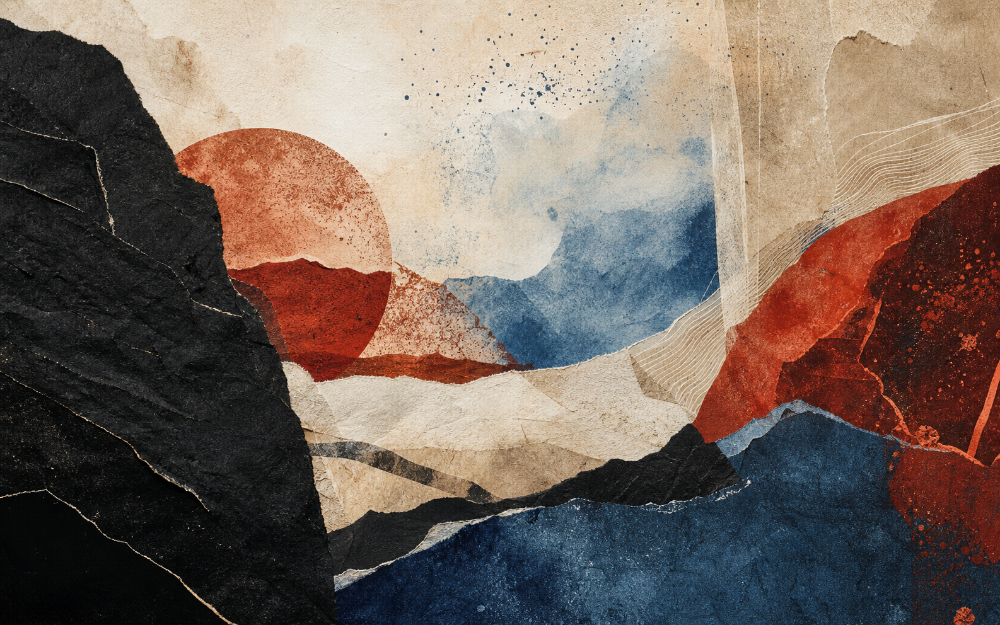

Robert O'Shea
Every detail carries a story.
Licensed barber and entrepreneur in Tracy, CA. Father; Native American and Irish heritage.

Robert O'Shea
Licensed barber and entrepreneur in Tracy, CA. Father; Native American and Irish heritage.